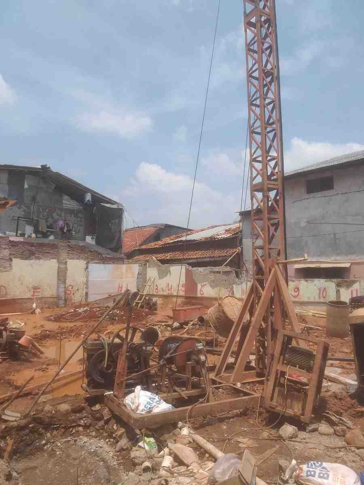
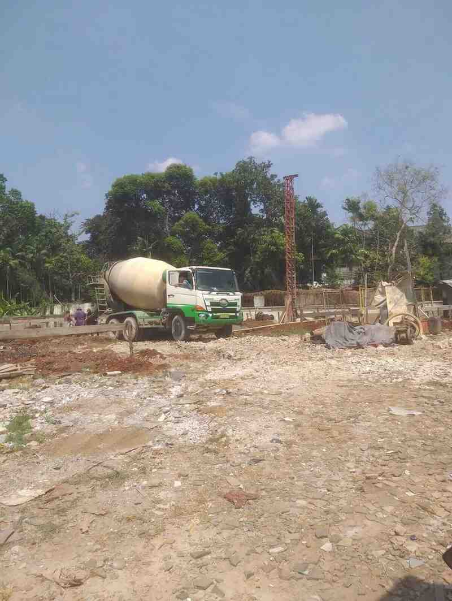

Daftar Artikel Pondasi Bore Pile
Kumpulan artikel lengkap tentang teknik pondasi, perbandingan borepile vs strauss pile, tips hemat biaya, dan informasi terbaru seputar konstruksi pondasi di Jakarta dan sekitarnya.

Apa Itu Borepile? Panduan Lengkap Pondasi Bor
Pelajari definisi, kelebihan, kekurangan, dan proses pengerjaan borepile untuk pondasi bangunan Anda.

Strauss Pile: Solusi Pondasi untuk Area Sempit
Cocok untuk proyek dengan akses terbatas, ini keunggulan strauss pile dibanding metode lain.

Update Harga Bore Pile Jakarta 2026
Informasi harga terbaru bore pile per meter untuk berbagai diameter, plus kalkulator estimasi biaya.

Tips Memilih Pondasi untuk Lahan Sempit
Strategi memilih jenis pondasi yang tepat untuk proyek di lahan terbatas dan akses sulit.

Pengerjaan Borepile di Area Dekat Dinding Tetangga
Teknik pengeboran minim getaran untuk proyek yang berdekatan dengan bangunan eksisting.

Standar Spesifikasi Besi Tulangan Strauss Pile
Informasi lengkap tentang ukuran besi, jarak sengkang, dan kualitas beton untuk strauss pile.

Cara Menghitung Kebutuhan Beton untuk Bore Pile
Rumus sederhana menghitung volume beton yang dibutuhkan untuk proyek bore pile Anda.

Perbandingan Harga Bore Pile Diameter 30cm, 40cm, 50cm
Analisis biaya dan daya dukung untuk berbagai ukuran diameter bore pile.

Memperkuat Pondasi di Tanah Lunak dan Bekas Rawa
Panduan memilih metode pondasi yang tepat untuk kondisi tanah labil dan bekas rawa.
📚 Daftar Lengkap Semua Artikel (23 Artikel)
- Perbandingan Borepile vs Strauss Pile 6 Mei 2026
- Panduan Memilih Jasa Bore Pile Terpercaya 7 Mei 2026
- Proses Pengerjaan Bore Pile dari Awal hingga Akhir 7 Mei 2026
- Strategi Hemat Biaya Pondasi Tanpa Mengorbankan Kualitas 7 Mei 2026
- Panduan Lengkap Pondasi Bore Pile untuk Pemula 6 Mei 2026
- Memahami Bore Pile: Pondasi Modern untuk Bangunan 6 Mei 2026
- Rekomendasi Jasa Bore Pile Jakarta Terpercaya 6 Mei 2026
- Jasa Bore Pile Bekasi: Pilihan Tepat untuk Proyek Anda 6 Mei 2026
- Jasa Bore Pile Murah dengan Kualitas Terjamin 6 Mei 2026
- Koleksi Gambar Proyek Bore Pile 6 Mei 2026
- Harga Bore Pile Diameter 30cm Terbaru 8 Mei 2026
- Perencanaan Borepile untuk Bangunan Bertingkat 6 Mei 2026
Halaman artikel ini akan terus diperbarui dengan konten baru. Jika ada topik yang ingin Anda bahas, silakan hubungi tim kami melalui WhatsApp. Konsultasi gratis 24 jam!